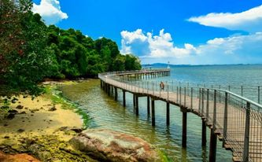
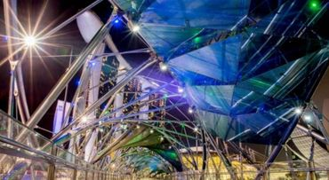

Gardens By the pay
Singapore took her garden city moniker to new heights in 2012 with the opening of gardens By the bay, a leading horticultural destinations for locals and visitors looking to appreciate nature's beauty houses in the heart of the city, gardens by the bay is home to various attractions such as the flower dome,flower fantasy,cloud forest,and super tree grave.

Sentosa
An island just off singapore southern coast, Sentosa is the city's go-to island resort known for its tropical beaches, hotels, and exciting attractions, singapores tropical weather makes for excellent beach-bum days, with Sentosa's beaches giving the perfect locations for sun-filled enjoyment.

Pulao Ubin
Away from the hustle and bustle of the city, you'll be able to explore the great outdoors at pulau at pulau ubin,a historical island of Singapore north eastern coast. You'll be able to admire historical sites such as old ground quarries,along with coconut rubber plantations,fish farms,and singapores sole surviving kampong.

Parkview Square
Parkview square was designed by Singapore's So architects and James Adams design of USA,and is especially significant due to its art deco-inspired design. The exterior of parkview square is a majestic amalgam of bronze and glass,and it's distinct architectural style has led locals to refer to it as "the Gotham building".

Marina Bay Sands
Marina bay sands is located in the heart of the city,marina bay sands dominates the city skyline and is a must visit place in singapore.this integrated takes up the entire bayfront are and offers an immersive experience. Home to a luxury hotel,boutique shopping,and Michelin star eating.